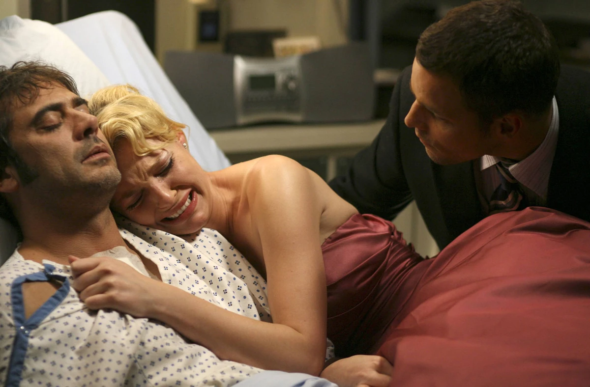
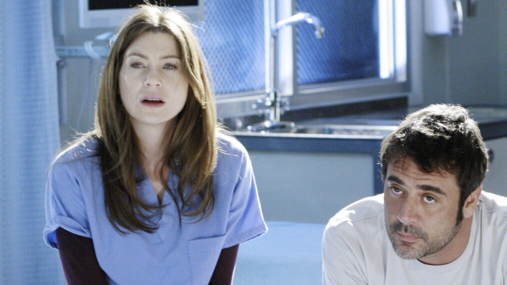
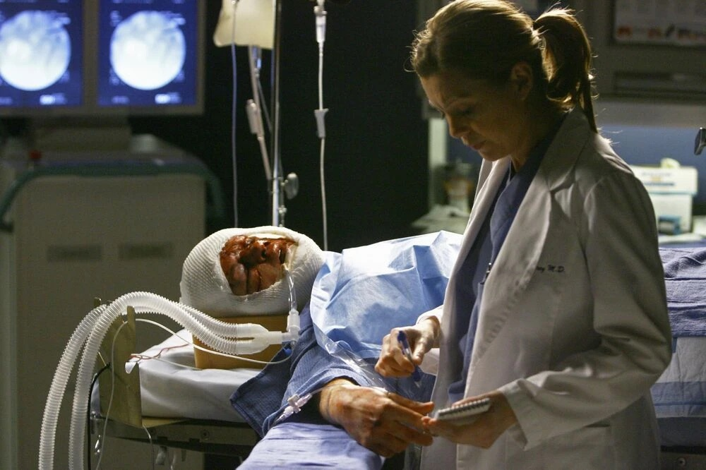
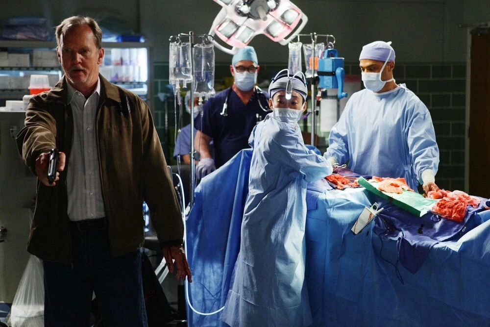
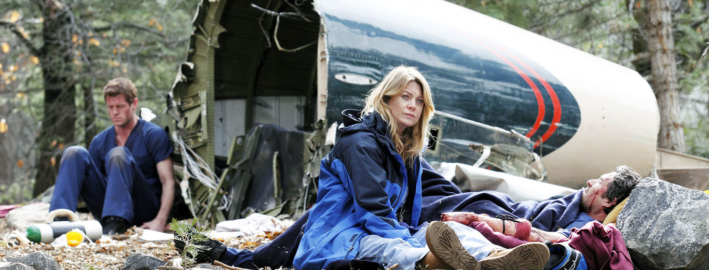
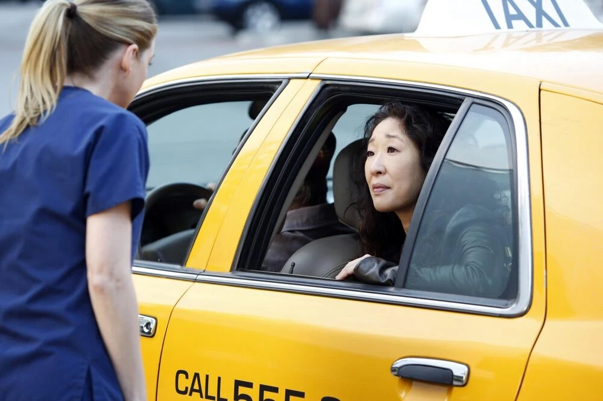

Temporada 2
Año: 2005-2006
Total de episodios: 27
Elenco principal: Ellen Pompeo, Sandra Oh, Katherine Heigl, Justin Chambers, T.R Knight, Chandra Wilson, James Pickens Jr, Kate Walsh, Isaiah Washington, Patrick Dempsey
Conflicto central: Meredith sufre por el triángulo amoroso con Derek y Addison, mientras Izzie arriesga todo al cortar el cable del LVAD por salvar a su paciente.
Evento trágico: La inesperada muerte de Denny Duquette.

Episodio destacado
“Losing my religion” (T2, E27)
Es un tenso final de temporada donde el jefe de cirugía interroga al equipo para descubrir una grave falta médica. Mientras los doctores organizan un baile en el hospital, los secretos amorosos y las crisis profesionales estallan, cambiando el destino de los protagonistas para siempre.
Temporada 3
Año: 2006-2007
Total de episodios: 25
Elenco principal: Ellen Pompeo, Sandra Oh, Katherine Heigl, Justin Chambers, T.R Knight, Chandra Wilson, James Pickens Jr, Kate Walsh, Sara Ramírez, Eric Dane, Isaiah Washington, Patrick Dempsey
Conflicto central: El conflicto central es la inestabilidad emocional de Meredith y la feroz competencia médica por ascender en el hospital.
Evento trágico: El catastrófico accidente del ferry.

Episodio destacado
“Some kind of miracle” (T3, E17)
La desesperada lucha de los médicos por reanimar a Meredith Grey tras su ahogamiento. Mientras un devastado Derek y el equipo del hospital intentan salvarla, Meredith experimenta un limbo entre la vida y la muerte donde se reencuentra con personajes del pasado como Denny y Dylan, decidiendo finalmente si luchar por su vida o dejarse ir.
Temporada 5
Año: 2008-2009
Total de episodios: 24
Elenco principal: Ellen Pompeo, Sandra Oh, Katherine Heigl, Justin Chambers, T.R Knight, Chandra Wilson, James Pickens Jr, Kate Walsh, Sara Ramírez, Eric Dane, Chyler Leigh, Kevin McKidd, Isaiah Washington, Patrick Dempsey
Conflicto central: La crisis de salud de Izzie Stevens con sus alucinaciones, junto a la llegada del doctor Owen Hunt.
Evento trágico: George O'Malley muere atropellado por un autobús.

Episodio destacado
“Now or never” (T5, E24)
George le da una noticia sorprendente a Bailey, lo que provoca conmoción en todo el hospital, y los amigos de Izzie esperan ansiosos su recuperación de la cirugía. Mientras tanto, Bailey está sorprendentemente disgustada después de ser aceptada en el programa de becas pediátricas, y la víctima de un accidente de tráfico casi fatal reúne a los talentosos médicos del Seattle Grace.
Temporada 6
Año: 2009-2010
Total de episodios: 24
Elenco principal: Ellen Pompeo, Sandra Oh, Katherine Heigl, Justin Chambers, Chandra Wilson, James Pickens Jr, Kate Walsh, Sara Ramírez, Eric Dane, Chyler Leigh, Kevin McKidd, Isaiah Washington, Jessica Capshaw, Kim Raver, Patrick Dempsey
Conflicto central: La fusión del Seattle Grace con el hospital Mercy West.
Evento trágico: Tiroteo masivo perpetrado por Gary Clark, un hombre cuyo esposa falleció en el hospital.

Episodio destacado
“Death and all his friends” (T6, E24)
Dramático desenlace del tiroteo en el hospital, donde un Gary Clark irrumpe en el quirófano para amenazar la vida de Derek Shepherd. El episodio culmina con el suicidio de tirador y la supervivencia de los cirujanos heridos en medio de un hospital profundamente traumatizado.
Temporada 8
Año: 2011-2012
Total de episodios: 24
Elenco principal: Ellen Pompeo, Sandra Oh, Justin Chambers, Chandra Wilson, James Pickens Jr, Kate Walsh, Sara Ramírez, Eric Dane, Chyler Leigh, Kevin McKidd, Isaiah Washington, Jessica Capshaw, Kim Raver, Sarah Drew, Jesse Williams, Patrick Dempsey
Conflicto central: La crisis matrimonial de Meredith y Derek, la presión por los exámenes finales de especialidad, y el catastrófico accidente de avión al cierre de la temporada.
Evento trágico: El impactante accidente aéreo.

Episodio destacado
“Flight” (T8, E23)
Ante una situación que pone en peligro su vida, los médicos deben luchar por mantenerse con vida mientras intentan salvar la vida de sus compañeros. Bailey y Ben toman una decisión sobre su relación y Teddy recibe una oferta tentadora. Mientras tanto, Richard planea una cena especial para los residentes.
Temporada 10
Año: 2013-2014
Total de episodios: 24
Elenco principal: Ellen Pompeo, Sandra Oh, Justin Chambers, Chandra Wilson, James Pickens Jr, Kate Walsh, Sara Ramírez, Eric Dane, Chyler Leigh, Kevin McKidd, Isaiah Washington, Jessica Capshaw, Kim Raver, Sarah Drew, Jesse Williams, Patrick Dempsey
Conflicto central: La ruptura profesional y personal entre Meredith y Cristina, sumado a la crisis matrimonial de Meredith con Derek por la oferta de trabajo de este en Washington DC y la despedida definitiva de Cristina Yang del hospital.
Evento trágico: La despedida definitiva de la Dra. Cristina Yang.

Episodio destacado
“Fear (of the Unknown)” (T10, E24)
Marca la emotiva despedida de la doctora Cristina Yang. Nos deja el icónico y nostálgico último baile entre Meredith y Cristina. Se define el futuro profesional de varios médicos del Grey Sloan Memorial mientras Seattle enfrenta momentos de tensión.